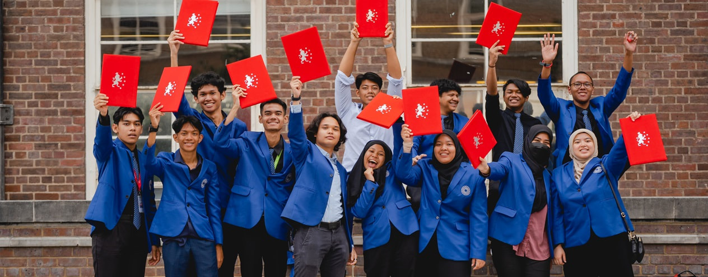
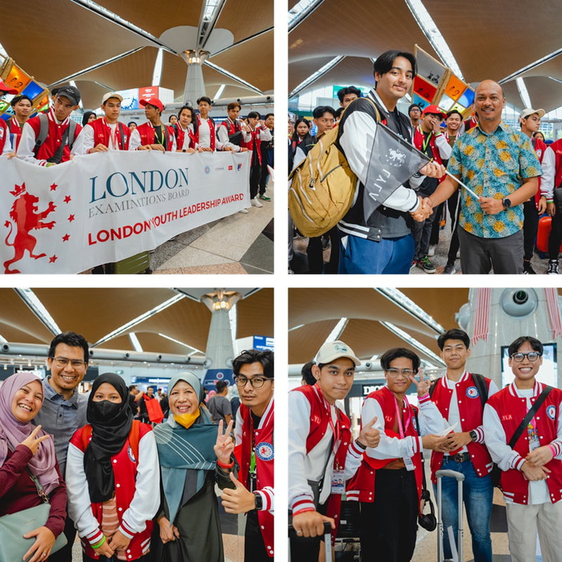
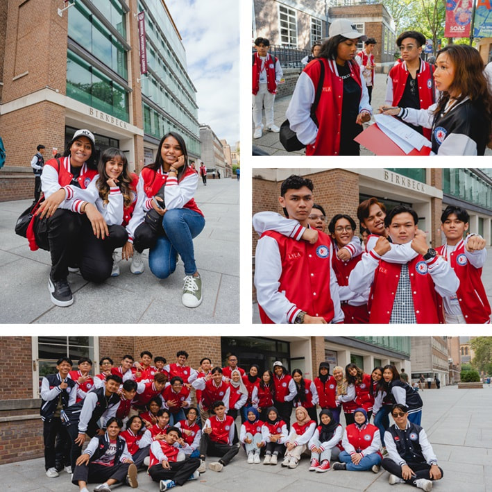
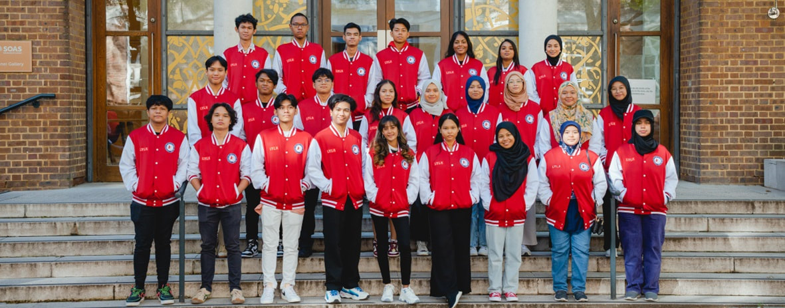
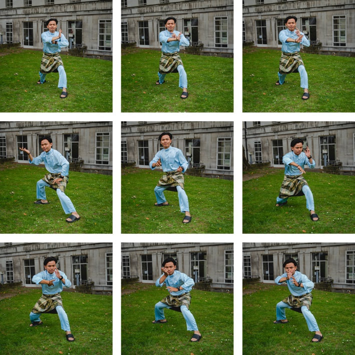
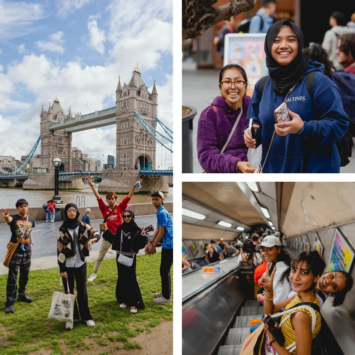
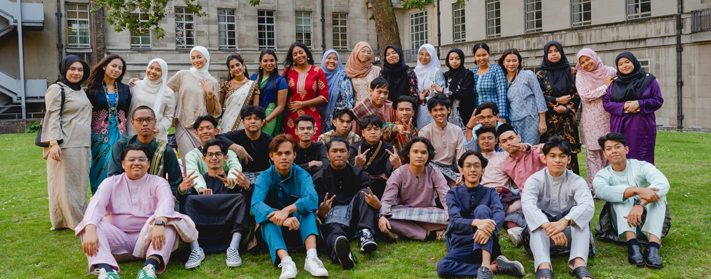

The London Youth Leadership Award — Leadership, London and Unforgettable Learning.
LOYLA — the London Youth Leadership Award — is the international leadership component woven into the Caliph Academy Double Diploma. It stretches boundaries and broadens horizons through an immersive experience that blends leadership workshops in Malaysia with an unforgettable academic journey across the United Kingdom.
Think of it as a leadership lab — where ideas are tested, networks are formed and perspectives are widened, culminating in a viva at the University of Oxford and a convocation in London.
 London Youth Leadership Award
London Youth Leadership AwardPresent and defend your work in a viva at the historic University of Oxford.
A mini convocation and ceremony hosted in the city of London.
Seminars and creative workshops that build real leadership capability.
Explore London's landmarks and, for Bravo Company, Liverpool & Manchester.
Real moments from the London Youth Leadership Award — from the send-off at KLIA to graduation day in London.






LOYLA begins with workshops in Malaysia, followed by a UK expedition offered in two companies — choose the 7-day Alpha or the 10-day Bravo experience.
Phase 2 · In the United Kingdom — choose your company
LOYLA turns knowledge into leadership — a defining chapter of your Caliph Academy Double Diploma.
LOYLA gives you a taste of Oxford and London — but it doesn't have to end there. After your Double Diploma, you can top up to a full UK bachelor's degree in just one year at the University of Gloucestershire, and earn a two-year post-study work visa.
Explore Study in the UK →Begin in KL · Graduate in the UKSpeak to our team about joining the next LOYLA expedition as part of your Double Diploma.
Enquire Now